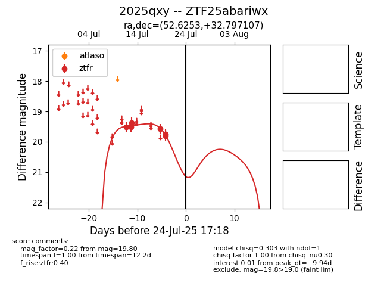

Target 2025qxy at 2025-08-06 17:27, see:
FINK: fink-portal.org/2025qxy
Lasair: lasair-ztf.lsst.ac.uk/objects/2025qxy
ALeRCE: alerce.online/object/2025qxy
TNS: wis-tns.org/object/2025qxy
YSE: ziggy.ucolick.org/yse/transient_detail/2025qxy
alt names
ZTF25abariwx (ztf,fink)
2025qxy (tns,yse)
coordinates:
equatorial (ra, dec) = (52.6253,+32.79711)
galactic (l, b) = (157.6256,-19.15117)
photometry
last ztfr=19.80
6 ztfr detections
